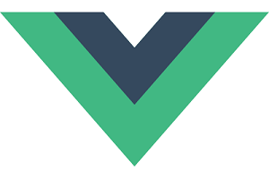
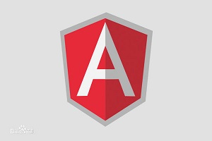

Hello！
- 1.熟练掌握html和css的基础，html标签和css的属性(选择器和基本属性)，熟悉w3c标准;
- 2.掌握H5+C3的新增属性，对盒模型，弹性模型(flex)，浮动，定位属性有深刻认识;
- 3.熟练js的特点，对数据类型，函数，作用域(闭包)，this，数组，对象，事件，原型链，dom，bom有自己的认识；
- 4.能够运用jQuery库进行创作，有良好的面向对象编程思想；
- 5.掌握bootstrp框架，能够完成响应式网站的创作；
- 6.掌握nodejs的应用，掌握express，了解koa，基于node平台的全栈开发；/li>
- 7.掌握ajax的工作原理，熟悉json数据，能很好的与后端完成交互和传输；
- 8.掌握ES5，了解ES6新增语法；
- 9.参与过微信公众号的研发；

VueJs
- 1.了解Vue基础，熟练Vue的系统指令；
- 2.了解v-on事件；
- 3.熟练vue-cli项目实例；
- 4.理解vue的生命周期；
- 5.对vue中的ajax有一定的了解；
- 6.了解Vue动画和Vue组件及组件之间的传值；
- 7.了解vue-router路由
Vue

AngularJs
- 1.了解angular基础，熟练系统指令；
- 2.了解angular模型；
- 3.熟练angular Scope(作用域)；
- 4.理解angular过滤器和控制器；
- 5.对angular事件，模块了解；
- 6.了解angular包含，动画，依赖；
- 7.了解angular路由和应用；
- 8.使用angular完成实际项目；
Angular
联系方式：18398806249
邮箱：1032790481@qq.com